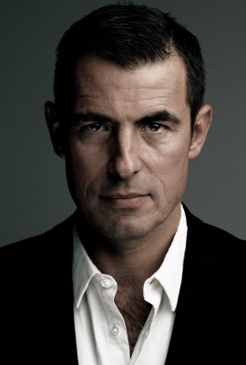
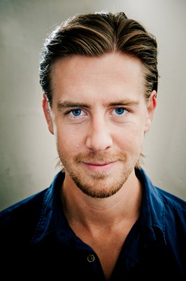
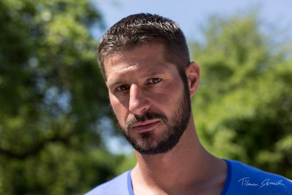

#10922 Verschwörung
 gesehen am 24.05.2019
gesehen am 24.05.2019

 IMDB-Wertung: 6.1 / 10
IMDB-Wertung: 6.1 / 10  Metascore: 43
Metascore: 43 
In Stockholm, Sweden, vigilante hacker Lisbeth Salander is hired by computer programmer Frans Balder to retrieve Firefall, a program capable of accessing the world's nuclear codes that he developed for the National Security Agency, as Balder believes it is too dangerous to exist. Lisbeth successfully retrieves Firefall from the NSA's servers, attracting the attention of agent Edwin Needham, but is unable to unlock it, and the program is later stolen from her by mercenaries led by Jan Holtser, who also attempt to kill Lisbeth. When she doesn't attend their scheduled rendezvous, Balder mistakenly believes Lisbeth decided to keep Firefall for herself and contacts Gabrielle Grane, the deputy director of the Swedish Security Service (Säpo), who moves Balder and his young son August to a safe-house. Meanwhile, Needham tracks the unauthorized login to Stockholm and arrives to seek Lisbeth and Firefall..
Jahr: 2018
Dauer: 117 Minuten
FSK: 16
Land: Deutschland Studio: Sony Pictures ReleasingTonspuren: DTS - ,
Untertitel: Deutsch,
Auflösung: 1080p (1920x808) Größe: 10209 MB
Genre: Action, Thriller, Drama, Krimi
Regisseur: Fede Alvarez
Drehbuch: David Lagercrantz, Stieg Larsson, Jay Basu, Fede Alvarez, Steven Knight
Soundtrack: Roque Baños
Darsteller:
 Claire Foy als Lisbeth Salander
Claire Foy als Lisbeth Salander- Beau Gadsdon als Young Lisbeth Salander
- Sverrir Gudnason als Mikael Blomkvist
- LaKeith Stanfield als Ed Needham
- Sylvia Hoeks als Camilla Salander
- Carlotta von Falkenhayn als Young Camilla Salander
 Stephen Merchant als Frans Balder
Stephen Merchant als Frans Balder- Christopher Convery als August Balder
-  Claes Bang als Jan Holtser
- Synnøve Macody Lund als Gabriella Grane
- Cameron Britton als Plague
 Vicky Krieps als Erika Berger
Vicky Krieps als Erika Berger- Andreja Pejic als Sofia
 Mikael Persbrandt als Alexander Zalachenko
Mikael Persbrandt als Alexander Zalachenko Anja Karmanski als Landlord
Anja Karmanski als Landlord Volker Bruch als Peter Ahlgren
Volker Bruch als Peter Ahlgren-  Pål Sverre Hagen als Ove Levin
- Christian Serritiello als NSA Officer
- Lea Faßbender als August's Mother
- Sonja Chan als Naked Asian Woman
- Felix Quinton als Camilla's Henchman
- Sebastian Stielke als Uniformed Cop 4
- Sinha Melina Gierke als Airport Employee
- Oliver Juhrs als Airport Policemen
-  Steffen Jung als Airport Policeman
- Amalia Holm als Waitress
- Lee Huang als Henchman #6 (uncredited)
- Thomas Wingrich als Grane's Home Security
- Andreas Tietz als Camilla's Driver
- Paula Schramm als Malin Erikson
- Saskia Sophie Rosendahl als Linda Ahlgren
- Damien Murphy als Cops
- Asuka Tovazzi als Cops
- Daniel Stockhorst als Holster's Driver
- Béla Gabor Lenz als Seedy Looking Punk
- Maddy Savage als Reporter
- Tom Jester als Huge Skinhead
- Hendrik Heutmann als Milos Meer
- Volkram Zschiesche als Dark Haired SAPO Agent
- Alois Knapps als Camilla's Henchman
- Wolfgang Lindner als Gabriella Grane's Driver
- Michael Bornhütter als Airport Policemen
- Christian Zagia als Detention Room Blonde Cop
- Johan Eriksson als Fireman (uncredited)
- Mattias Königsson als Pedestrian (uncredited)
- Martin Müller als Police Officer (uncredited)
- Alexander Yassin als NSA Analyst (uncredited)
Datei: X:\4-Tetralogie(M-Z)\Stieg Larsson Millennium\Verschwörung (2018, FSK16, 1920x808).mkv seit 03.04.2019
Festplatte: HD Collection-3(N-Z)-6(A-Z)
 Es gibt insgesamt 10 Filme in der Gruppe '4-Tetralogie(M-Z)\Stieg Larsson Millennium'
Es gibt insgesamt 10 Filme in der Gruppe '4-Tetralogie(M-Z)\Stieg Larsson Millennium'